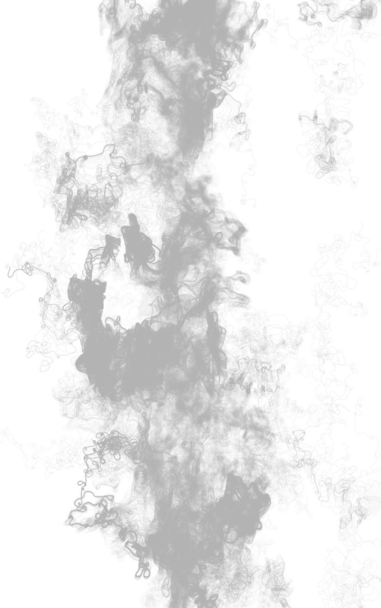
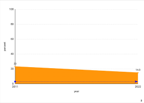
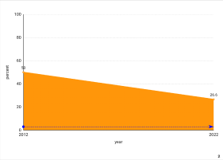
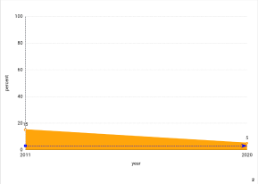
성인 흡연율
한국의 성인 흡연율은 2011년 약 25.6%였으나 2020년 15.9%로 감소했습니다.
이는 정부의 강력한 금연 정책의 결과로 평가됩니다. 특히 2015년 담배
가격을 약 80% 인상한 것이 큰 영향을 미쳤습니다. 가격 인상 이후 흡연율은
단기적으로 약 6%포인트 이상 줄었으며, 공공장소 금연법과 충격적인 금연
광고도 성인 흡연율 감소에 중요한 역할을 했습니다.
청소년 흡연율
청소년 흡연율은 2011년 약 12.1%에서 2021년 약 4.5%로 감소해 가장 큰 폭의
감소를 보였습니다. 남학생의 흡연율은 2011년 7.3%에서 2020년 2.7%로,
여학생의 흡연율은 같은 기간 1.7%에서 1.1%로 줄었습니다. 이는 학교 기반의
금연 교육과 담배 판매 제한, 금연 클리닉 운영 등의 효과로 분석됩니다.
남성·여성 흡연율
한국의 남성 흡연율은 과거 높은 수준을 기록했으나, 1998년 66.3%에서
2011년 46.1%, 2020년 34.0%로 지속적으로 감소했습니다. 반면 여성의
흡연율은 비교적 낮은 수준을 유지하며 2011년과 2020년 모두 약 6~7%로
집계되었습니다. 하지만 최근 전자담배 사용이 청년 여성 사이에서 증가하는
경향이 관찰되고 있습니다.
성인 흡연율
미국은 성인 흡연율이 2011년 약 19.0%에서 2021년 12.5%로 줄어들며 선진국
중 가장 낮은 수준을 기록했습니다. 담배 광고 금지와 공공장소 금연법 시행,
대규모 금연 캠페인 등이 흡연율 감소의 주요 원인으로 작용했습니다.
청소년 흡연율
미국의 청소년 흡연율은 2011년 약 15.8%에서 2021년 2.3%로 급감했습니다.
이는 금연 교육과 강력한 담배 규제 덕분으로 평가됩니다. 그러나 전자담배
사용률이 높아지면서 청소년 사이에서 니코틴 의존 문제가 새롭게
등장했습니다.
남성·여성 흡연율
2020년 기준 미국 남성 흡연율은 15.3%, 여성은 10.4%로 나타났습니다. 이는
담배세 인상과 흡연의 사회적 낙인 효과가 결합된 결과로 분석됩니다.
남성·여성 흡연율
남성 흡연율은 2000년대 초반 약 50%에서 2022년 26.6%로 크게 감소했습니다.
여성 흡연율은 약 10% 미만으로 큰 변화가 없으나, 젊은 층에서 가열담배와
전자담배 사용이 늘어나는 경향이 관찰되고 있습니다.
성인 흡연율
일본의 성인 흡연율은 2011년 약 23%에서 2022년 14.8%로 감소했습니다.
지속적인 담배세 인상과 공공장소 금연법 시행이 주요 원인으로 꼽힙니다.
일본은 2018년 건강증진법을 개정하며 음식점과 기업 내 흡연을 금지하고
흡연 부스를 설치해 흡연 구역을 분리했습니다.
청소년 흡연율
청소년 흡연율은 과거에 비해 지속적으로 감소했습니다. 이는 학교와 가정
중심의 금연 교육, 담배 접근성 제한, 금연 캠페인 강화의 결과로
평가됩니다. 하지만 전자담배와 가열담배 사용이 증가하면서 새로운 공중보건
문제가 대두되고 있습니다.
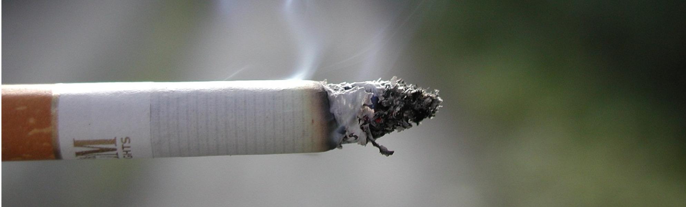
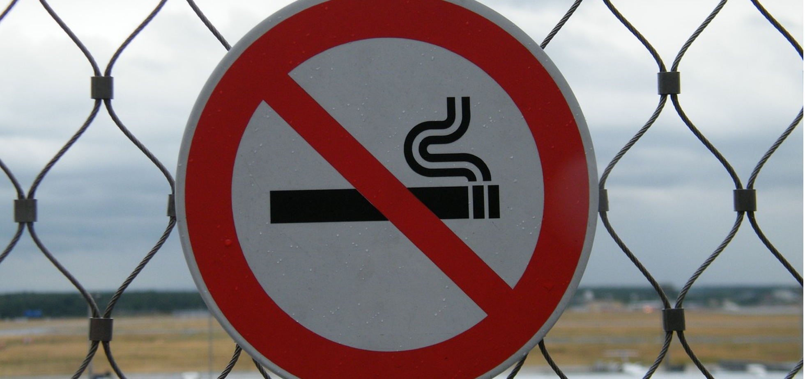
흡연율 변화의 주요 원인
한국의 흡연율 감소는 여러 요인의 영향을 받았다. 주요한 원인으로는 금연
정책 강화와 사회적 인식 변화를 들 수 있다. 정부의 흡연세 인상(2015년,
2,500원에서 4,500원으로 인상), 공공장소 금연법과 금연 캠페인이 주요한
변화 요소였다. 또한, 담배 광고 제한과 청소년 금연 교육도 효과적인
전략으로 작용했다.
일본도 비슷한 시기에 금연 정책을 강화했으나 흡연 문화가 깊게 뿌리내려 있어
변화 속도는 상대적으로 더디었다. 일본의 흡연세 인상(2010년대 초반), 공공장소
금연 및 가열 담배(히츠) 확산 등이 흡연율 감소에 기여했다. 특히, 가열 담배의
인기가 높아지면서 전통적인 담배보다 상대적으로 건강에 덜 해로운 대체제로
인식되며 흡연율을 낮추는 데 도움을 주었다.
정책의 차이
한국은 2015년 담배 가격 인상과 함께 강력한 금연 정책을 추진한 결과
공공장소 금연, 대중적 금연 캠페인 등을 적극적으로 활용하여 흡연율 감소가
더욱 빠르게 진행되었다. 반면 일본은 담배 가격 인상과 금연 구역 확대 등을
점진적으로 시행했으나 한국만큼 빠른 변화는 나타나지 않았다.
 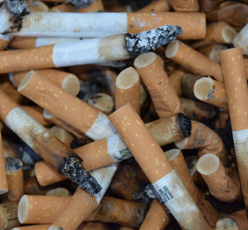
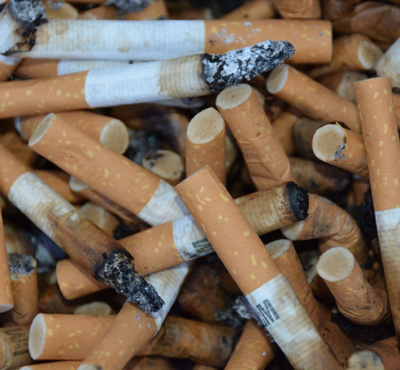
What
Is
Smoking?
흡연은 담배를 피워 연기를 흡입하는 행위로 주로 니코틴, 타르, 일산화탄소 등의
유해 물질을 포함하고 있습니다. 흡연은 심혈관 질환, 호흡기 질환, 폐암 등
다양한 건강 문제의 주요 원인으로 작용하며 간접흡연으로 인해 주변
사람들에게도 피해를 줄 수 있습니다. 이에 많은 국가에서 금연 구역 설정, 담배
세금 인상, 금연 캠페인 등 다양한 정책을 통해 흡연을 줄이려 하고 있으며
금연은 건강을 개선하는 중요한 방법으로 여겨집니다.
최근 10년 간 흡연율 변화: 한국, 일본 미국을 중심으로
Changes In Smoking Rates
over the last 10 years
(from Korea, Japan, United States)
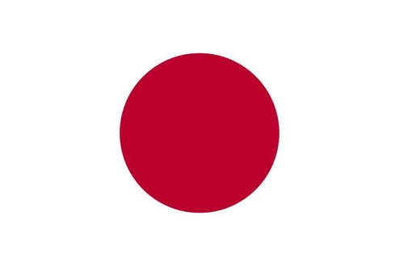
Comparison of Smoking Rates
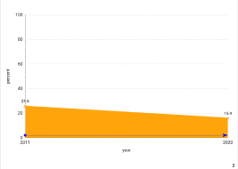
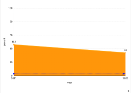
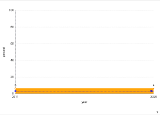
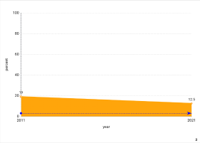
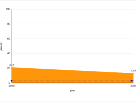
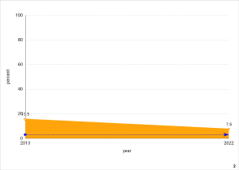